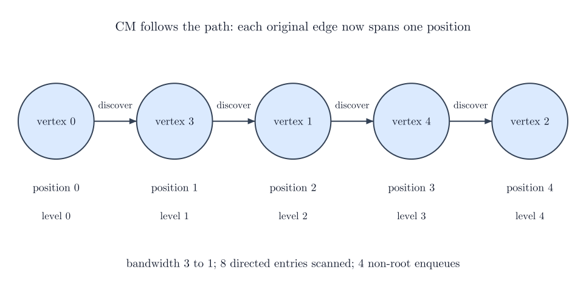
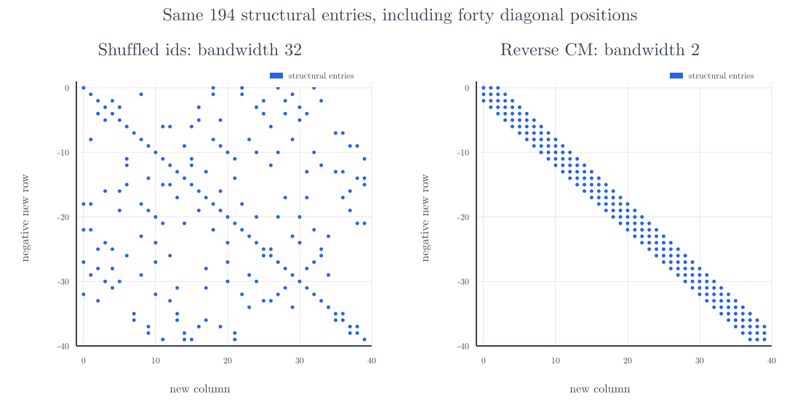
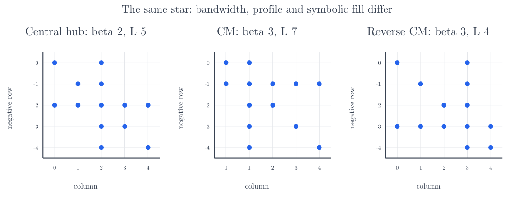
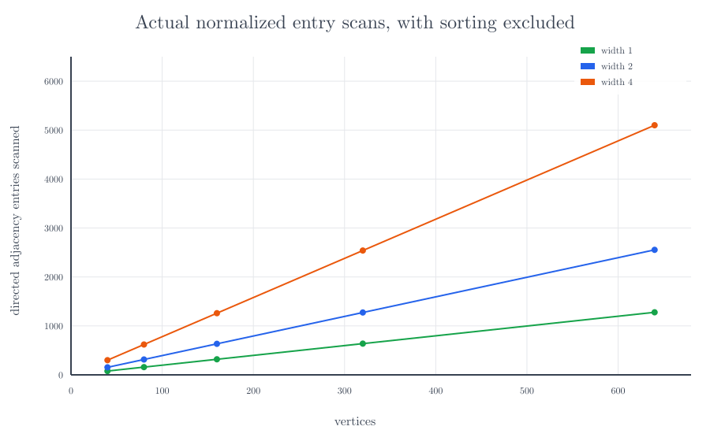

Cuthill–McKee: Queue Order, Bandwidth and the Effect of Reversal
Abstract
A simultaneous row and column permutation changes where a sparse symmetric matrix stores its nonzeros without changing the underlying linear system. Cuthill–McKee (CM) uses a breadth-first queue with low-degree choices to seek a narrow band. We begin with five vertices, retain the original forty-row shuffled band example, and distinguish bandwidth from lower profile and Cholesky fill. Reversing any ordering preserves bandwidth exactly; its value is a possible improvement in envelope shape. A five-vertex star shows that CM can even worsen an already good bandwidth. Native datamunge APIs provide complete actual traversal traces, checked graph normalization, permutations, profile diagnostics and structural coordinates. Counts and exact small-graph controls support the claims; no solver speedup or optimal ordering is assumed.
Five vertices: see the queue before the matrix
Take the path 0—3—1—4—2. Its original labels scatter edges three positions from the diagonal. Degrees are (1,2,1,2,2), so the smallest (degree,id) root is 0. Removing 0 discovers 3; removing 3 discovers 1; the queue continues through 4 to 2. The forward order is (0,3,1,4,2). Each edge then spans one position. All of this comes from the actual traversal, including parents, levels and discoveries, rather than from an independently reconstructed walk.
#include <dm/dm.hpp>
int main() {
std::filesystem::create_directories("build");
const std::vector<std::vector<int>> graph{{3},{3,4},{4},{0,1},{1,2}};
const auto t=dm::algorithms::cuthill_mckee_trace(graph);
const auto before=dm::algorithms::symmetric_pattern_metrics(graph,{0,1,2,3,4});
const auto after=dm::algorithms::symmetric_pattern_metrics(graph,t.order);
if(t.order!=std::vector<int>{0,3,1,4,2} || before.bandwidth!=3 || after.bandwidth!=1 || t.adjacency_scans!=8) return 1;
std::print("| removal position | original vertex | degree | parent | BFS level | newly enqueued |\n| ---: | ---: | ---: | ---: | ---: | :--- |\n");
dm::graphics::Diagram d(78,1100);
dm::graphics::DiagramNodeStyle node;node.width=1.6;node.height=1.2;node.circle=true;node.font_size=18;node.fill={219,234,254};
for(std::size_t k=0;k<t.steps.size();++k) {
const auto& s=t.steps[k];const int u=s.vertex;
std::print("| {} | {} | {} | {} | {} | {} |\n",k,u,t.degree[u],t.parent[u],t.level[u],s.newly_enqueued);
d.node(std::to_string(u),{2.5*k,0},std::format("vertex {}",u),node)
.text({2.5*k,-1.4},std::format("position {}",k),18)
.text({2.5*k,-2},std::format("level {}",t.level[u]),17);
if(t.parent[u]!=u) d.edge(std::to_string(t.parent[u]),std::to_string(u),"discover");
}
d.text({5,2},"CM follows the path: each original edge now spans one position",21)
.text({5,-3},std::format("bandwidth {} to {}; {} directed entries scanned; {} non-root enqueues",before.bandwidth,after.bandwidth,t.adjacency_scans,t.neighbor_enqueues),19)
.save_svg("build/cuthill_queue.svg");
std::print("\nForward order {}; inverse positions {}.\n",t.order,t.position);
}| removal position | original vertex | degree | parent | BFS level | newly enqueued |
|---|---|---|---|---|---|
| 0 | 0 | 1 | 0 | 0 | [3] |
| 1 | 3 | 2 | 0 | 1 | [1] |
| 2 | 1 | 2 | 3 | 2 | [4] |
| 3 | 4 | 2 | 1 | 3 | [2] |
| 4 | 2 | 1 | 4 | 4 | [] |
Forward order [0, 3, 1, 4, 2]; inverse positions [0, 2, 4, 1, 3].

Specify the ordering and derive what it changes
Let p[k] be the original vertex placed at new position k, and let q be its inverse: q[p[k]]=k. For P[k,p[k]]=1, the permuted system is B=PAPᵀ, y=Px and c=Pb. Solving By=c and returning x=Pᵀy solves the original Ax=b. The permutation preserves symmetry and positive definiteness when present; a graph pattern alone does not imply either numerical property beyond structural symmetry. For any nonzero z, zᵀBz=(Pᵀz)ᵀA(Pᵀz)>0 when A is SPD, since Pᵀz is nonzero.
The off-diagonal structural graph has an edge {u,v} for each symmetric nonzero pair. This report assumes diagonal positions exist for storage illustrations. Define the half-bandwidth and row-envelope profiles by
Here N_i contains neighbouring positions in the permuted graph; an edgeless graph has β=L=U=0. We call β simply bandwidth below; a symmetric full band has width at most 2β+1, including the diagonal. A lower skyline allocates n+L slots, including diagonal and any holes inside the envelope. That is not the number of actual nonzeros in the matrix or its Cholesky factor.
Datamunge implements a fixed, deterministic CM variant:
- Normalize each adjacency row, ignoring self-loops and repeated entries; reject invalid endpoints or any missing reverse edge.
- Among unvisited vertices, start the next component at the smallest pair (distinct off-diagonal degree, original id).
- Remove the head of a FIFO queue. Sort that vertex's undiscovered neighbours by the same pair, mark them discovered and append them to the queue.
- Repeat until the component ends, then choose the next root. Reverse the complete final sequence only if requested.
The sort is per removed vertex, not a global sorting of a whole level. Marking at enqueue time means an edge to a discovered-but-unprocessed vertex cannot enqueue it again. Every vertex is removed exactly once. BFS discovers every vertex reachable from its root, and restarting covers every component, so the result is a permutation. For each graph edge in a connected component, its endpoint levels differ by at most one. Placing whole levels consecutively gives the coarse bound β≤max_j(V_j+|V_{j+1}|−1). Take the maximum over nonempty levels in every component, allowing the next level to be empty at the end. Small fronts therefore help, but they do not prove optimal bandwidth.
There is no pseudo-peripheral root search here; a lowest-degree root is a specific variant. Root and tie choices can differ from other implementations. The implementation pre-sorts all possible roots once, avoiding a new O(n) scan for every isolated vertex. Including normalization, sorting and symmetry checks, time on valid input is O(n log(n+1)+Σ r_i log(r_i+1)), where r_i is raw row length. Storage is O(n+m_raw). The BFS edge scan alone is linear in the normalized directed-entry count; calling the entire algorithm O(edges) would omit sorting, isolated vertices and input preparation.
Retain the original forty-row experiment
The natural unshuffled pattern connects each of forty ids to its neighbours at distance one or two. The original seed-seven std::mt19937 shuffle supplies labels[old]=new. Because the permutation API takes order[new]=old, we pass its inverse to construct precisely that relabelled graph. The generator, relabeling, metrics and coordinate extraction all run in the canonical core. The particular std::shuffle permutation can vary between standard-library implementations; the reproducible GCC/libstdc++ fixture below has bandwidth 32 before reordering and 2 afterward. The executed guard checks recovery of the two-wide band, rather than assuming the raw shuffle has identical ids on every platform.
#include <dm/dm.hpp>
int main() {
std::filesystem::create_directories("build");
std::mt19937 rng(7);std::vector<int> labels(40),identity(40);
std::iota(labels.begin(),labels.end(),0);std::iota(identity.begin(),identity.end(),0);
std::shuffle(labels.begin(),labels.end(),rng);
const auto graph=dm::algorithms::permute_symmetric_pattern(dm::algorithms::symmetric_band_pattern(40,2),dm::algorithms::inverse_ordering(labels));
const auto t=dm::algorithms::cuthill_mckee_trace(graph,true);
const auto natural=dm::algorithms::symmetric_pattern_metrics(graph,identity);
const auto forward=dm::algorithms::symmetric_pattern_metrics(graph,t.forward_order);
const auto reverse=dm::algorithms::symmetric_pattern_metrics(graph,t.order);
if(reverse.bandwidth!=2 || forward.bandwidth!=reverse.bandwidth || reverse.edges!=77 || t.adjacency_scans!=154) return 1;
std::print("| ordering | vertices | edges | bandwidth | lower profile | upper profile |\n| :--- | ---: | ---: | ---: | ---: | ---: |\n");
std::print("| original shuffled ids | 40 | {} | {} | {} | {} |\n",natural.edges,natural.bandwidth,natural.lower_profile,natural.upper_profile);
std::print("| CM | 40 | {} | {} | {} | {} |\n",forward.edges,forward.bandwidth,forward.lower_profile,forward.upper_profile);
std::print("| RCM | 40 | {} | {} | {} | {} |\n",reverse.edges,reverse.bandwidth,reverse.lower_profile,reverse.upper_profile);
auto figure=dm::graphics::RLayout::create(1,2);
for(const auto& order:std::vector<std::vector<int>>{identity,t.order}) {
auto coordinates=dm::algorithms::symmetric_pattern_coordinates(graph,order);
for(double& row:coordinates.row) row=-row;
const auto m=dm::algorithms::symmetric_pattern_metrics(graph,order);
auto panel=dm::graphics::RPlot::create();
panel.points(coordinates.column,coordinates.row,"structural entries",{37,99,235},2.5)
.title(std::format("{}: bandwidth {}",order==identity?"Shuffled ids":"Reverse CM",m.bandwidth))
.x_label("new column").y_label("negative new row")
.x_limits(-1,40).y_limits(-40,1).size(520,520);
figure.add(panel);
}
figure.size(1100,560).title("Same 194 structural entries, including forty diagonal positions")
.save_svg("build/cuthill_mckee.svg");
std::print("\nActual normalized adjacency scans {}; non-root enqueues {}; components {}.\n",t.adjacency_scans,t.neighbor_enqueues,t.roots.size());
}| ordering | vertices | edges | bandwidth | lower profile | upper profile |
|---|---|---|---|---|---|
| original shuffled ids | 40 | 77 | 32 | 557 | 559 |
| CM | 40 | 77 | 2 | 77 | 77 |
| RCM | 40 | 77 | 2 | 77 | 77 |
Actual normalized adjacency scans 154; non-root enqueues 39; components 1.

This successful example recovers the narrow coupling of the constructed pattern. It is not evidence that CM always shrinks bandwidth, nor a benchmark of factorization time. For an SPD band matrix, band Cholesky can exploit O(nβ) storage and O(nβ²) work; actual sparse solvers use symbolic structure, ordering overhead and hardware-dependent numeric kernels as well.
Reversal preserves bandwidth; the star separates the objectives
For pʳ[k]=p[n−1−k], its inverse is qʳ[v]=n−1−q[v]. Consequently
The profile identities follow by exchanging left and right neighbours and reversing row positions. They hold for any permutation of a symmetric pattern, not just CM. Lower profile need not fall for an arbitrary reversed ordering. For this star, CM starts at the smallest leaf, visits the hub, then discovers the other leaves. CM has bandwidth 3 and lower profile 7; RCM has the same bandwidth and lower profile 4. A different legal order places the hub centrally and attains bandwidth 2. Indeed, four distinct neighbours need room within β positions on either side of the hub, so 2β≥4 proves β≥2; that central order is optimal. Relabel the same graph by this good order and CM worsens its bandwidth from 2 to 3. This is an explicit limitation, not just a missing proof.
#include <dm/dm.hpp>
int main() {
std::filesystem::create_directories("build");
const std::vector<std::vector<int>> star{{1,2,3,4},{0},{0},{0},{0}};
const auto cm=dm::algorithms::cuthill_mckee(star),rcm=dm::algorithms::cuthill_mckee(star,true);
const std::vector<std::vector<int>> orders{{1,2,0,3,4},cm,rcm};
const std::vector<std::string> names{"Central hub","CM","Reverse CM"};
auto figure=dm::graphics::RLayout::create(1,3);
std::print("| order | original ids | bandwidth | lower profile | lower skyline slots | symbolic L entries below diagonal |\n| :--- | :--- | ---: | ---: | ---: | ---: |\n");
for(std::size_t k=0;k<orders.size();++k) {
const auto& order=orders[k];const auto m=dm::algorithms::symmetric_pattern_metrics(star,order);
const auto factor=dm::algorithms::symbolic_cholesky(dm::algorithms::permute_symmetric_pattern(star,order));
std::size_t entries=0;for(const auto& row:factor) entries+=row.size();
std::print("| {} | {} | {} | {} | {} | {} |\n",names[k],order,m.bandwidth,m.lower_profile,5+m.lower_profile,entries);
auto coordinates=dm::algorithms::symmetric_pattern_coordinates(star,order);
for(double& row:coordinates.row) row=-row;
auto panel=dm::graphics::RPlot::create();
panel.points(coordinates.column,coordinates.row,"",{37,99,235},5)
.title(std::format("{}: beta {}, L {}",names[k],m.bandwidth,m.lower_profile))
.x_label("column").y_label("negative row").x_limits(-.5,4.5).y_limits(-4.5,.5).size(360,380);
figure.add(panel);
}
figure.size(1140,440).title("The same star: bandwidth, profile and symbolic fill differ")
.save_svg("build/cuthill_star.svg");
const auto good=dm::algorithms::permute_symmetric_pattern(star,orders[0]);
const auto before=dm::algorithms::symmetric_pattern_metrics(good,{0,1,2,3,4});
const auto after=dm::algorithms::symmetric_pattern_metrics(good,dm::algorithms::cuthill_mckee(good));
if(before.bandwidth!=2 || after.bandwidth!=3) return 1;
std::print("\nCounterexample after central relabeling: input bandwidth {}; CM bandwidth {}.\n",before.bandwidth,after.bandwidth);
}| order | original ids | bandwidth | lower profile | lower skyline slots | symbolic L entries below diagonal |
|---|---|---|---|---|---|
| Central hub | [1, 2, 0, 3, 4] | 2 | 5 | 10 | 5 |
| CM | [1, 0, 2, 3, 4] | 3 | 7 | 12 | 7 |
| Reverse CM | [4, 3, 2, 0, 1] | 3 | 4 | 9 | 4 |
Counterexample after central relabeling: input bandwidth 2; CM bandwidth 3.

Fill is a third quantity: when a vertex is eliminated, its remaining neighbours become a clique. That can add edges even within a small band. The symbolic L counts above exclude the diagonal and include original lower entries; subtract the four original edges to obtain newly introduced fill. The CM hub is eliminated with three remaining leaves, creating all three leaf-to-leaf edges: four original entries plus three fill entries gives seven. The central hub has two remaining leaves and adds one edge, giving five. RCM removes three leaves before the hub; its last neighbour creates no pair and no fill, giving four. A lower skyline is an envelope allocation bound, not an equality with this count. RCM is useful for profile-oriented workflows; for fill-focused sparse direct solvers, compare it with elimination-oriented orderings on the actual problem. No claim of a universal CM/RCM factorization speed or fill advantage is needed here.
Count the work, and make invalid inputs observable
For n>w, the width-w band generator has Σ_{d=1}^w(n−d) undirected edges, so a full traversal scans 2wn−w(w+1) normalized directed entries. The next experiment counts those actual scans, rather than presenting a noisy elapsed runtime as a complexity proof. It also checks every returned permutation and the reversal identities. Fixed w makes scans linear in n; root/neighbour sorting and normalization still belong in the full cost described above.
#include <dm/dm.hpp>
int main() {
std::filesystem::create_directories("build");
auto plot=dm::graphics::RPlot::create();const std::vector<dm::graphics::RGB> colours{{22,163,74},{37,99,235},{234,88,12}};
std::mt19937 rng(7);std::size_t series=0;
std::print("| vertices | generating width | normalized edges | actual directed-entry scans | returned bandwidth |\n| ---: | ---: | ---: | ---: | ---: |\n");
for(int w:{1,2,4}) {
std::vector<double> sizes,scans;
for(int n:{40,80,160,320,640}) {
std::vector<int> order(n);std::iota(order.begin(),order.end(),0);std::shuffle(order.begin(),order.end(),rng);
const auto graph=dm::algorithms::permute_symmetric_pattern(dm::algorithms::symmetric_band_pattern(n,w),order);
const auto t=dm::algorithms::cuthill_mckee_trace(graph,true);
const auto m=dm::algorithms::symmetric_pattern_metrics(graph,t.order);
const auto f=dm::algorithms::symmetric_pattern_metrics(graph,t.forward_order);
if(t.adjacency_scans!=static_cast<std::size_t>(2*w*n-w*(w+1)) || t.neighbor_enqueues!=static_cast<std::size_t>(n-1) || m.bandwidth!=f.bandwidth || m.lower_profile!=f.upper_profile || dm::algorithms::inverse_ordering(t.order)!=t.position) return 1;
std::print("| {} | {} | {} | {} | {} |\n",n,w,m.edges,t.adjacency_scans,m.bandwidth);
sizes.push_back(n);scans.push_back(t.adjacency_scans);
}
plot.line(sizes,scans,std::format("width {}",w),colours[series],2)
.points(sizes,scans,"",colours[series],4);++series;
}
plot.legend({"width 1","width 2","width 4"},colours)
.title("Actual normalized entry scans, with sorting excluded")
.x_label("vertices").y_label("directed adjacency entries scanned")
.x_limits(0,680).y_limits(0,6500).size(900,560).save_svg("build/cuthill_work.svg");
const auto disconnected=dm::algorithms::cuthill_mckee_trace({{}, {2}, {1}, {}});
std::print("\nDisconnected order {}; component roots {}; levels {}.\n",disconnected.order,disconnected.roots,disconnected.level);
const auto duplicates=dm::algorithms::cuthill_mckee_trace({{1,1,0},{0,0,1}});
std::print("Duplicate/loop normalization: order {}; distinct degrees {}; actual scans {}.\n",duplicates.order,duplicates.degree,duplicates.adjacency_scans);
int rejections=0;
try {dm::algorithms::cuthill_mckee({{1},{}});} catch(const std::invalid_argument&) {++rejections;}
try {dm::algorithms::cuthill_mckee_trace({{1},{0}},false,1,0);} catch(const std::length_error&) {++rejections;}
try {dm::algorithms::symmetric_pattern_metrics({{1},{0}},{0,0});} catch(const std::invalid_argument&) {++rejections;}
try {dm::algorithms::cuthill_mckee_trace({{1},{0},{-1}},false,1,1);} catch(const std::invalid_argument&) {++rejections;}
if(rejections!=4 || !dm::algorithms::cuthill_mckee({}).empty()) return 1;
std::print("Asymmetry, complete vertex cap, duplicate permutation, and late invalid endpoint: {} expected rejections. Empty input returns an empty order.\n",rejections);
}| vertices | generating width | normalized edges | actual directed-entry scans | returned bandwidth |
|---|---|---|---|---|
| 40 | 1 | 39 | 78 | 1 |
| 80 | 1 | 79 | 158 | 1 |
| 160 | 1 | 159 | 318 | 1 |
| 320 | 1 | 319 | 638 | 1 |
| 640 | 1 | 639 | 1278 | 1 |
| 40 | 2 | 77 | 154 | 2 |
| 80 | 2 | 157 | 314 | 2 |
| 160 | 2 | 317 | 634 | 2 |
| 320 | 2 | 637 | 1274 | 2 |
| 640 | 2 | 1277 | 2554 | 2 |
| 40 | 4 | 150 | 300 | 4 |
| 80 | 4 | 310 | 620 | 4 |
| 160 | 4 | 630 | 1260 | 4 |
| 320 | 4 | 1270 | 2540 | 4 |
| 640 | 4 | 2550 | 5100 | 4 |
Disconnected order [0, 3, 1, 2]; component roots [0, 3, 1]; levels [0, 0, 1, 0]. Duplicate/loop normalization: order [0, 1]; distinct degrees [1, 1]; actual scans 2. Asymmetry, complete vertex cap, duplicate permutation, and late invalid endpoint: 4 expected rejections. Empty input returns an empty order.

The trace defaults to at most 100,000 vertices and 1,000,000 raw directed entries, including ignored loops/duplicates; zero disables the corresponding optional cap. Complete endpoint and size checks precede these caps and graph allocation. Reverse-edge symmetry is checked after normalization; an oversized asymmetric input can therefore reach the size limit first. Caps reject the whole trace rather than silently truncating its history. The legacy ordering function retains its original signature and has no optional cap. All owning results are independent of later input mutation. Invalid ids, asymmetric patterns and malformed permutations raise invalid_argument; representation limits, checked count overflow and optional caps raise length_error.
The permanent native tests compare all 33,868 simple labelled graphs through six vertices against an independent dense/linear-choice BFS reference. They also inspect every ordering of every simple graph through five vertices (124,470 cases) against explicit dense matrix positions, including reversal of profiles. Seeded irregular graphs, row permutations, duplicate/loop normalization, owned histories, full input checks, coordinate extraction, pattern round trips and 100,000 isolated vertices cover the surrounding API. These are algorithmic controls, so an unrelated downloaded dataset would add no evidence to this example.
References and reproducibility
- E. Cuthill and J. McKee (1969), “Reducing the bandwidth of sparse symmetric matrices,” Proceedings of the 24th ACM National Conference, pp. 157–172: https://doi.org/10.1145/800195.805928 . The implementation uses a documented deterministic minimum-degree component-start variant.
- W.-H. Liu and A. H. Sherman (1976), “Comparative analysis of the Cuthill–McKee and the reverse Cuthill–McKee ordering algorithms for sparse matrices,” SIAM Journal on Numerical Analysis 13(2), pp. 198–213: https://doi.org/10.1137/0713020 .
- SciPy's official reverse_cuthill_mckee interface documents sparse-pattern and permutation semantics; its root/tie conventions need not reproduce these ids: https://docs.scipy.org/doc/scipy/reference/generated/scipy.sparse.csgraph.reverse_cuthill_mckee.html .
Every block is a complete editable C++23 program using the working core via pkg-config. All SVGs are saved under local build/ and copied into figures/; result blocks contain tables and file references rather than inline SVG text.